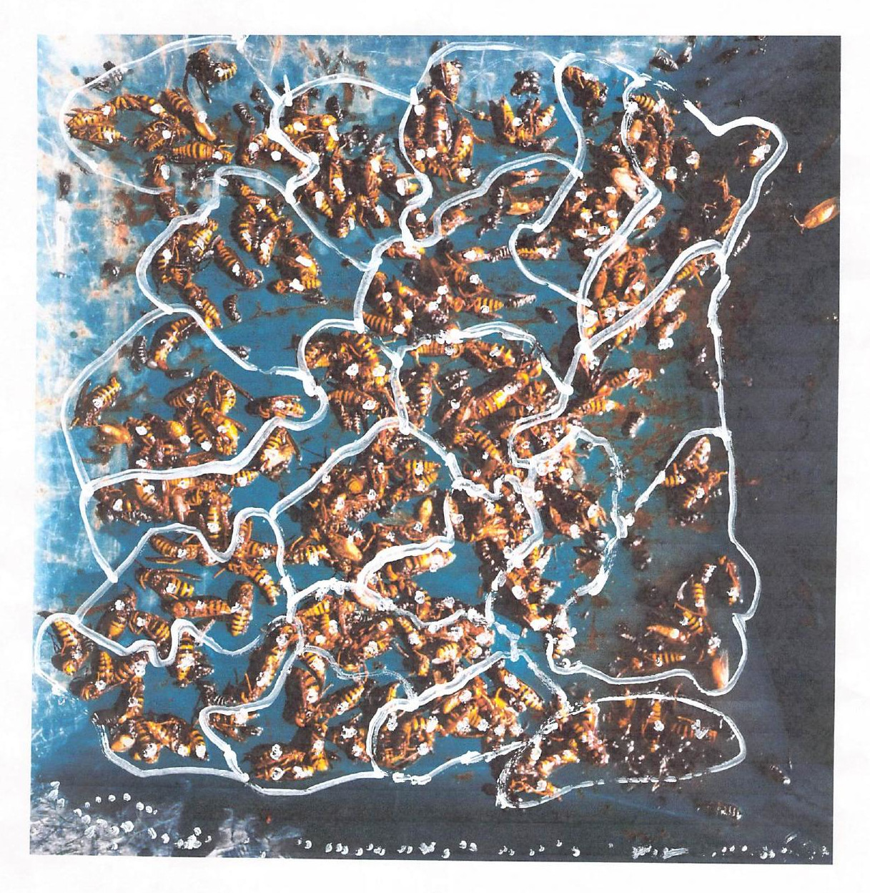
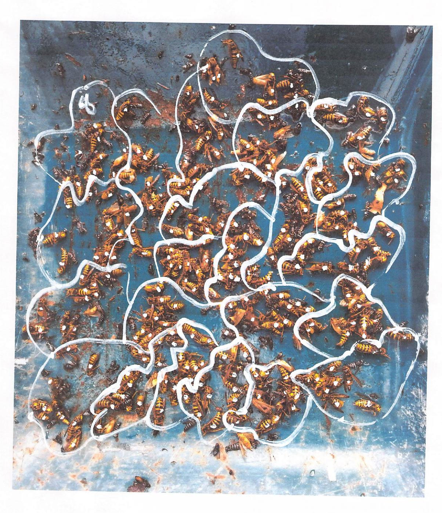
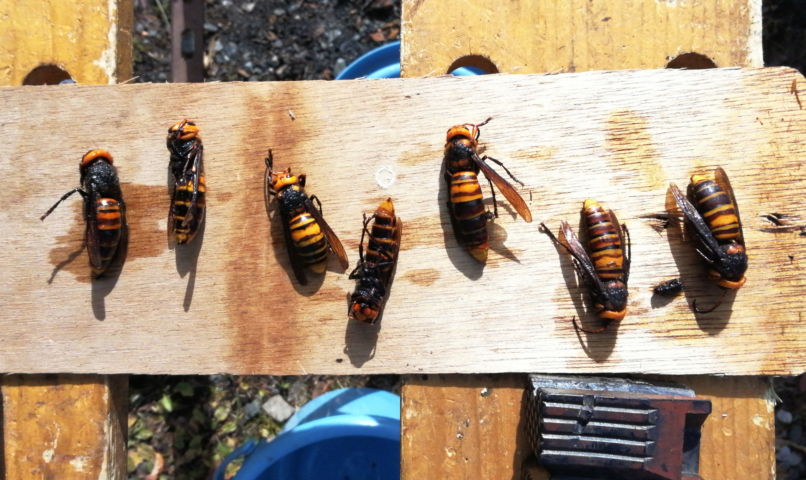
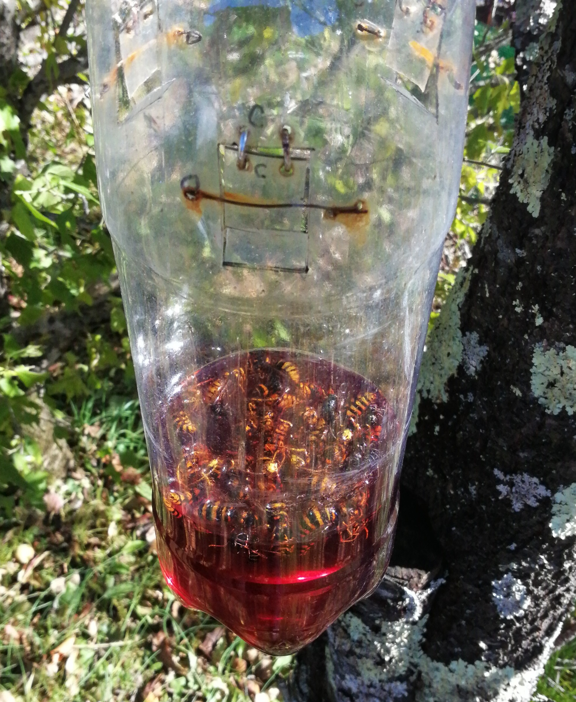
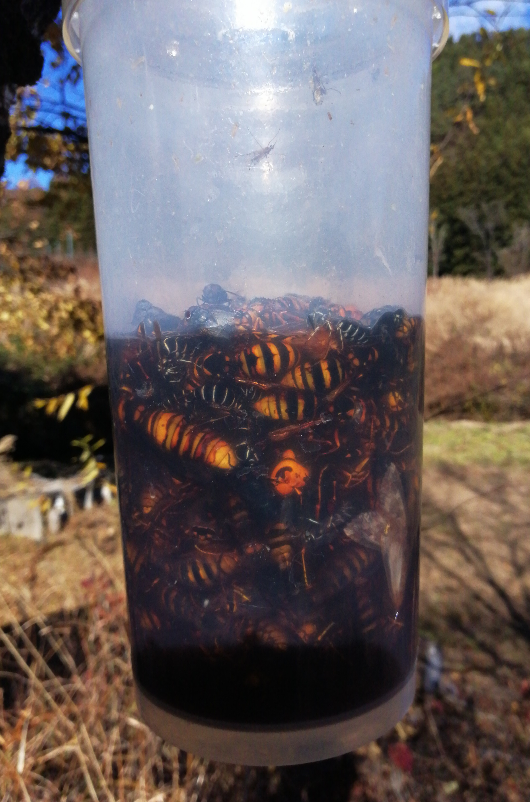
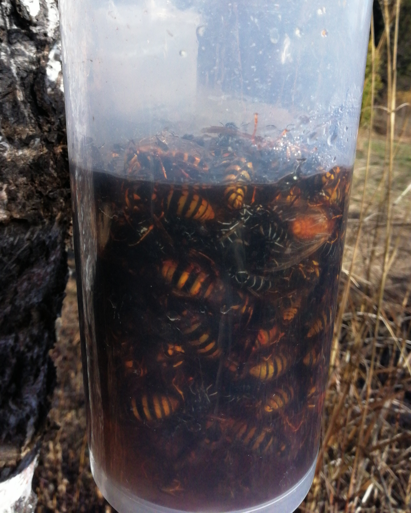
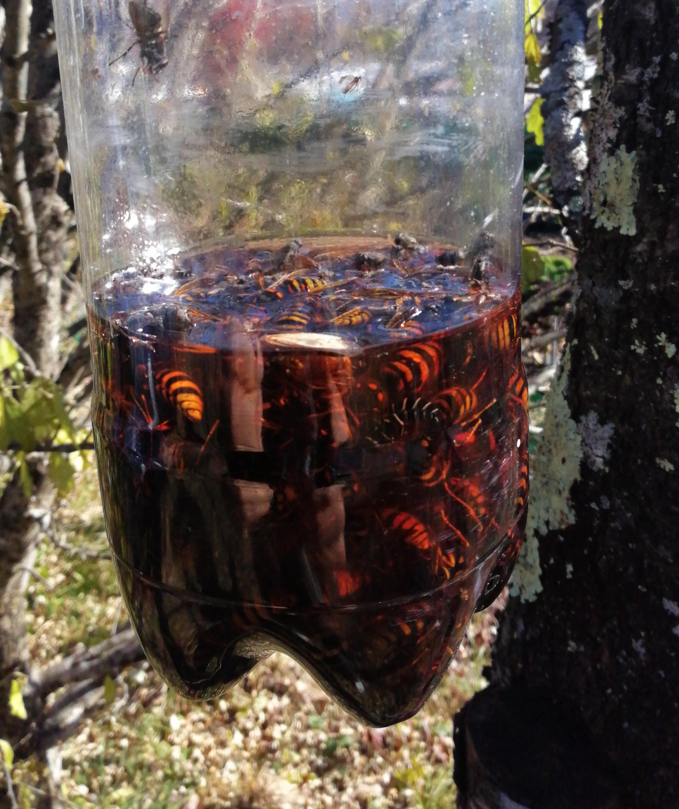
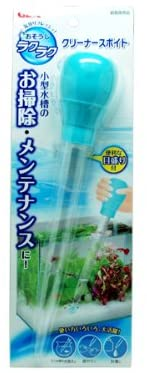

晩秋のスズメバチトラップ — 意外な成果
1 はじめに
これまで長年にわたって、スズメバチトラップは 4月〜5月頃 に仕掛け始め、夏の終わりには撤去していました。
2021年、初めてこの「おきて」を破り
11月初旬にスズメバチ トラップを仕掛け直しました。
この記事では、その経緯と成果などについて紹介します。
1.1 キイロスズメバチの巣が！
母屋の北東の角地に樹高およそ15メートルの 桑の木 があります。 2021年10月の末に、 その10メートルほどの高さの枝に キイロスズメバチ の大きな巣があるのを偶然 発見しました。
きっかけは、 巨木化した桑の木、その7,8メートルよりも低いところの枝の 整枝・剪定 をしていた時のこと、作業中に頻繁にスズメバチが周りをウロウロ飛び回ることに気づきました。
ちょっと変だなとよくよく樹上を見ると、下からは見えにくい場所に大きな巣があった！というわけです。
1.2 さて どうするか？
いろいろ調べた結果、
- 高い場所にある樹上の巣は、下を歩く人間にはさほど影響はない
- 季節的には秋口（10月末）なので、間もなく巣は放棄される
ということから、 本格的なハチの駆除や巣の撤去などはせずに、様子見をすることにしました。
しかし、 目と鼻の距離にある畑の地面に、多いときには7，8匹のキイロスズメバチが這い回ったり低く飛んだりしています。畑の脇の ハナモモ の木から落果した実が畑に落ちて腐敗・発酵したニオイに誘われて飛来するようです。 また農機具をしまっている倉庫の中に入ってきたり、 芝生の上を飛んだり、 と例年にない頻度でハチが飛び回っていて、かなり うっとうしい 。
1.3 そこで
既に完全撤去していたハチトラップをもう一度仕掛け直してみることにしました。 うるさいハチの数が少しでも減れば仕事がしやすいかな？というわけです。
2 トラップ設置時期など
設置期間は 16日間 でした。
- 11月05日（day 0） 日没後に3個のトラップを設置。場所は桑の木から5メートルほど離れた白樺の枝（2個）、15メートルほど離れた白樺の枝（1個）
- 11月21日（day 15） 全トラップを取り外して中のハチをバケツに入れてフタをし保管1
- 11月23日（day 17） バケツからハチを誘引液ごと 虫取り網 に受け、網からハチだけを取り出して、 手押し一輪車 の荷台に撒いて写真撮影
3 捕獲したハチのカウント
ハチの死骸を一輪車の荷台にできるだけ重ならないように拡げて撒いた後、 水槽用ピンセット （24cm）を使って 重なったハチを見えやすいように置き換え、写真を撮りました。
全部のハチを一挙に荷台に並べると、数が多すぎて死骸の重なりが多くなり、写真でのカウントが難しくなると判断して、半分ずつ2回に分けて撮影しました。
写真をA4の用紙に印刷して、数え終わったハチに修正液ペンで白い点を付け、10匹ごとにその範囲を修正液の白い線で囲みました。

図1: 1回目の撮影。約210匹

図2: 2回目の撮影。約250匹
その結果、合計捕獲数はおよそ 460匹 となりました。
その内、女王蜂クラスだけをピンセットで抽出して撮影したのが 図3です。

図3: 女王蜂クラスの7匹。ワークベンチ上にベニヤ板の端材を乗せて撮影。右側のベンチ板幅は12.0cmです。
右側の3匹の身長を Gimp の等倍ピクセル画像上でざっくり測定したところ
57mm 63mm 49mm
平均身長は 56.3mm 。死後硬直（？）で体が曲がっているので、実際にはもう少し大きかったと思います（怖！）
この他に、無数の クロスズメバチ （黒くて小柄、腹に白い模様）が捕獲されましたがカウントしませんでした。春先や夏前と違って 蛾 や ハエ はほとんど捕まっていません。
4 検討・今後の展望
スズメバチに関する多くのサイトには、次のような注意事項が書かれています：
夏以降には トラップを使わない 巣のそばに トラップを置かない
なぜか については、どのサイトもほぼ同じ理由をあげています。
- トラップ設置のタイミングは、女王蜂を捕獲できるので巣作りの始まる直前の4月から5月が好適
- 夏以降は働き蜂が多くなるので捕獲しても効果がうすい
- 秋口からはハチの攻撃性が高まるのでトラップは危険
- 巣の近くだと採れすぎて始末に困る etc.
こうした注意事項に従えば、秋口に家の近くに巣を張られた場合には
- 専門業者に4,5万円を支払って駆除するか
- 冬が来てハチが自然消滅し、巣が放棄されるのを待つか
どちらかです。多くの人はお金を払って駆除するでしょう。それはそれで一つの正しい方策だと思いますが、今回の経験からすれば、トラップを仕掛け直すのも悪くない選択肢かもしれません。
4.1 晩秋のトラップの有効性？
今回、経験したことは
- 1週間から10日ほどで、巣の蜂の大半を捕獲することができました
- 2週間ほどで、巣から出入りするハチは観察されなくなりました
- 日中気温が十数度程度に上がっても、周辺を飛び回るハチはいなくなりました
その結果、人が日常生活をする上での差しさわりは全くなくなりました。
夏から秋以降に、生活圏の近くに蜂の巣を見つけたときには、 巣の近くに、容量の大きな誘引液を持つトラップを数個以上仕掛けることで、 短期間で大量のスズメバチを捕獲・駆除することができることがわかりました。
寒波が来てハチが自然消滅した可能性も残されていますが、
初夏前のトラップ設置を第1の好機とすれば、 晩秋 もそれなりの有効性を持つ第2の好機と言えると思います。
（完）
5 （参考資料１）トラップと誘引液レシピ
5.1 トラップの種類と個数
使用したトラップは3個でした。
１つはペットボトルで手作りのOneWayスズメバチトラップ、 残りの2つは市販のスズメバチトラップで、シマダProBustoer業務用スズメバチバスター誘引捕獲器。 3個とも、誘引液は表1 のレシピを使用しました。
| 材料 | 量 |
|---|---|
| ぶどうジュース | 900cc |
| 日本酒 | 300cc |
| ホワイトリカー | 100cc |
| 酢 | 200cc |
| 砂糖 | 200g |
| 合計 | ≒1,700cc |
6 （参考資料２） 捕獲状況
6.1 day 1 (11月06日)
正午ころ、設置後わずか 半日 なのに驚くほどの多数のハチが入っていました。図4 は巣から一番遠い場所（15メートルほど）に設置した自作の OneWayスズメバチトラップ。入口に細工がしてあって、一旦入ったら出にくい仕掛けになっています。

図4: 自作のOneWayトラップ（三番機）
この三番機よりも多くのハチが捕獲されていたのは、巣のある桑の木に一番近い白樺にかけたトラップ。1トラップあたり30匹から40匹、つまり半日で合計して百数十匹が捕獲されたことになります。
6.2 Day-2（11月07日）
6.3 Day-12（11月18日）
3つのトラップともほぼ容器はハチの死骸で満杯状態になりました。誘引液の底までハチが詰まっている状態。

図7: 一番機

図8: 二番機

図9: 三番機（Oneway トラップ）
6.4 Day-14 （11月20日）
誘引液にハチが入りすぎて、液に浸ることが無くなったので、あらたに誘引液を追加調合し、図10 のようなスポイトを用いて、トラップを木に掛けたままで誘引液を補充・追加しました。

図10: 誘引液を補充・追加するために使用した水槽用スポイト
7 Footnotes:
脚注:
トラップからバケツに蜂を移すときには、刺されないように細心の注意が必要です。(1) トラップを軽く揺すってみて、中に動くハチがいるようだったら、トラップ内にハチ用殺虫剤を噴霧します。(2) バケツに誘引液ごと移したら直ちにフタを閉めます。(3) フタをしたバケツは2, 3日間、子どもなどが手を触れない場所に保管します。